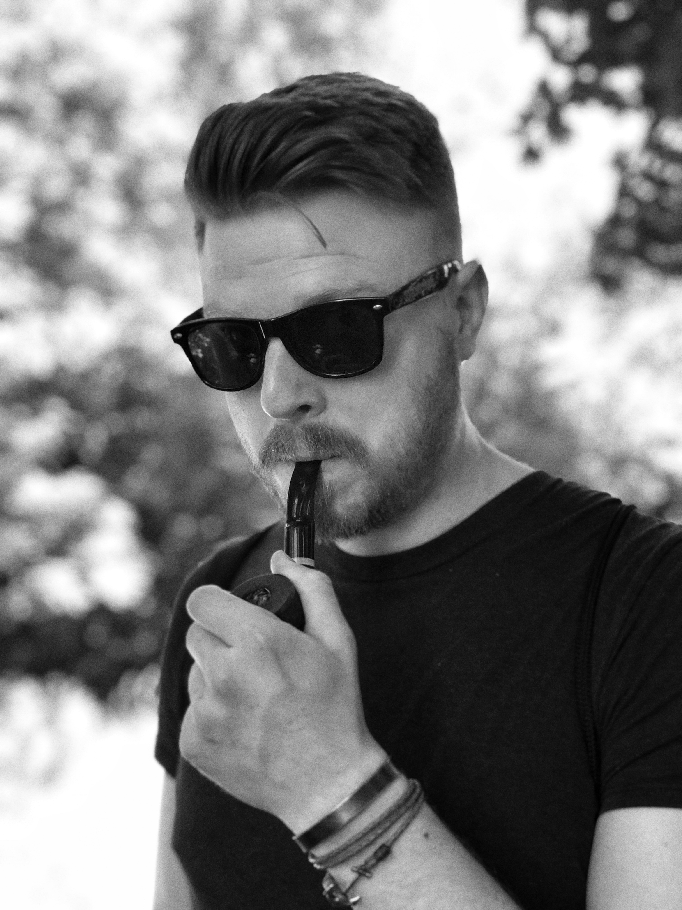

<!-- page section start -->
<section class="page-section">
  <div class="container">
    <div class="row">
      <div class="col-lg-6">
        <p>
          Po 10 letech v IT jsem se rozhodl skončit s kariérou vývojáře a manažera,
          místo toho jsem se začal věnovat koučování. Dělám s jednotlivci i s celými týmy,
          mezi má oblíbená témata patří procesy, postupy a zvyky jak v osobním, tak v profesním prostředí.
          Za léta praxe se vyznám v agilním řízení a prošel jsem několika manažerskými akademiemi.
          Navíc ve volném čase studuji time management a další seberozvojová témata.
        </p>
        <div class="row mt-5">
          <div class="col-md-6">
            <div class="milestone">
              <h2>12<span>Let praxe v IT</span></h2>
            </div>
          </div>
          <div class="col-md-6">
            <div class="milestone">
              <h2>2<span>Koučovací výcviky</span></h2>
            </div>
          </div>
          <div class="col-md-6">
            <div class="milestone">
              <h2>&gt;200<span>Sezení</span></h2>
            </div>
          </div>
          <div class="col-md-6">
            <div class="milestone">
              <h2>&gt;50<span>Klientů</span></h2>
            </div>
          </div>
        </div>
        <!-- <figure class="mt-5">
          
        </figure> -->
      </div>
      <div class="col-lg-5 offset-lg-1">
        <figure class="pic-frame">
          
        </figure>
      </div>
    </div>
  </div>
</section>
<!-- page section end -->
